Historical and reference coats of arms


Vienna
Guide. Places in this edition: 33.
OTIUM is the practice of deliberate leisure. In the classical sense, otium is not escape from work but time when attention returns to memory, landscape, and thought — without a utilitarian deadline.
We shape routes for lingering, not for checklist tourism. The goal is presence in a place rather than consumption of sights.
OTIUM is not a tour operator. It is an invitation to walk, pause, and leave a route unfinished if the light on a façade deserves another minute.
Historical and reference coats of arms
Guide. Places in this edition: 33.
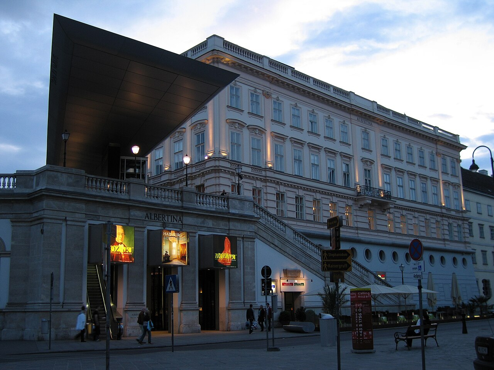
The Albertina is Vienna's renowned museum of graphic arts and prints, showcasing masterpieces by artists such as Rembrandt, Rubens, Dürer, and Picasso. Print rooms and graphic collections among the world's largest. State rooms overlook the opera roofline.
Named for Duke Albert of Saxe-Teschen; expanded as a public museum. Bridge between imperial residence layers and modern art shows.
The Ankeruhr is a charming historical clock located on the Rathausplatz in Vienna's Old Town. It has been delighting visitors with its quaint charm and intricate design since the early 19th century. Twelve noon parade of historical figures across the dial. Commissioned by the Anker insurance company.
Franz Matsch design linking two buildings over the market. Beloved Old Town clock-watching ritual.
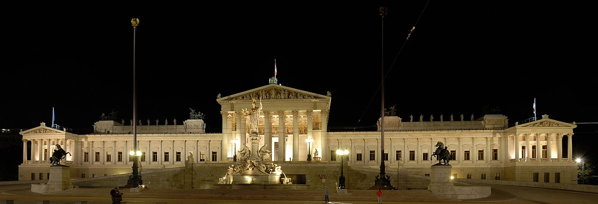
The Austrian Parliament building is a majestic neo-Gothic structure located on the Ringstraße in Vienna's Inner City. It was constructed between 1874 and 1904 to house the legislative branch of Austria-Hungary’s government. Athena fountain fronts the ramp to the portico. Seat of the Nationalrat and Bundesrat.
Built to embody democratic ideals of the 1867 constitution era. Political heart of the Republic on the Ringstraße.
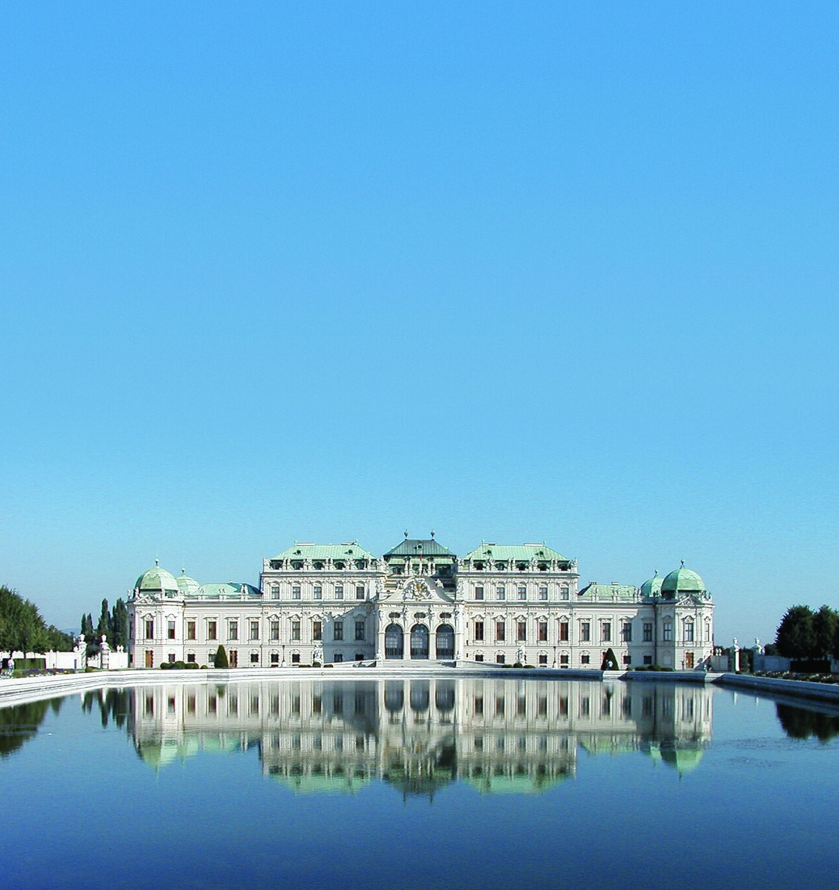
The Belvedere Palace complex is one of Vienna's most iconic landmarks, showcasing Baroque architecture at its finest. Comprised of two palaces—Upper and Lower Belvedere—they are set amidst extensive gardens and manicured grounds. Upper Belvedere holds Klimt's The Kiss and major Austrian collections. Linked by formal cascade gardens.
Built for Prince Eugene of Savoy as a garden villa ensemble. Art museum campus and Baroque landmark facing the city center.
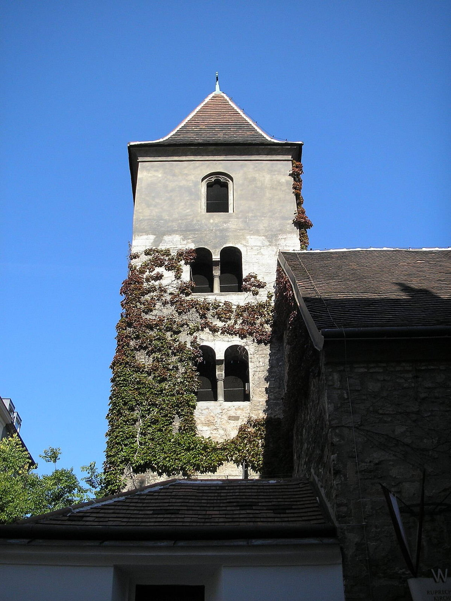
The Church of St. Rupert is a Baroque masterpiece located on the outskirts of Vienna's inner city, known for its striking white façade and intricate interior decoration. Often cited as Vienna's oldest church building fabric. Named for Salzburg's patron St.
Stood near Danube landing before river regulation moved the shore. Quiet Romanesque contrast to Baroque domes nearby.
Situated on the outskirts of Vienna's city centre, Danube Tower offers panoramic views across the Danube River and the surrounding suburbs. Its modern design and glass facade make it a striking addition to the city's skyline. 252 m height with revolving café and viewing deck. Built for the 1964 international garden show on new Danube islands.
Symbol of postwar modern Vienna's Danube reclamation projects. Panorama over city, river, and hills from the northeast.
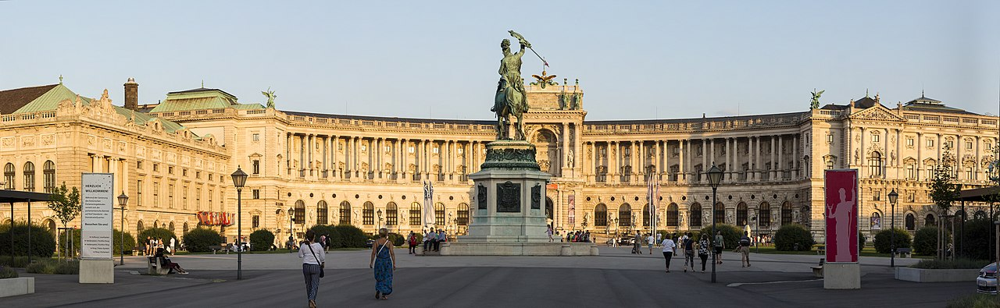
The Hofburg Palace is Vienna's grand historical centerpiece, a vast complex of buildings housing the Imperial Apartments and serving as the former residence of Austrian emperors. Seat of Habsburg power for centuries; now president's offices and museums. Includes Spanish Riding School stables, chapels, and libraries.
Grew from medieval castle into a city-sized palace over dynastic reigns. Geographic and symbolic center of historic Vienna.
The House of Music Vienna is a unique museum dedicated to the art and science of music. Located in the heart of the city, it offers interactive exhibits that explore the history, theory, and technology behind musical instruments and sound. Hands-on sound physics and Vienna Philharmonic storylines. Housed in the former Archduke Charles palace.
Opened 2000 as a high-tech complement to traditional concert life. Family-friendly introduction to acoustics and composers.

The Hundertwasserhaus is a vibrant and colorful residential building located in Vienna's Alsergrund district. Designed by Austrian artist Friedensreich Hundertwasser, it stands out with its unique architecture featuring undulating walls, organic shapes, and abundant greenery. Undulating floors, tree tenants, and polychrome façade. Adjacent village has cafés and Hundertwasser exhibits.
Municipal housing project co-designed with architect Josef Krawina as an artistic statement. Most photographed alternative architecture stop in Vienna.
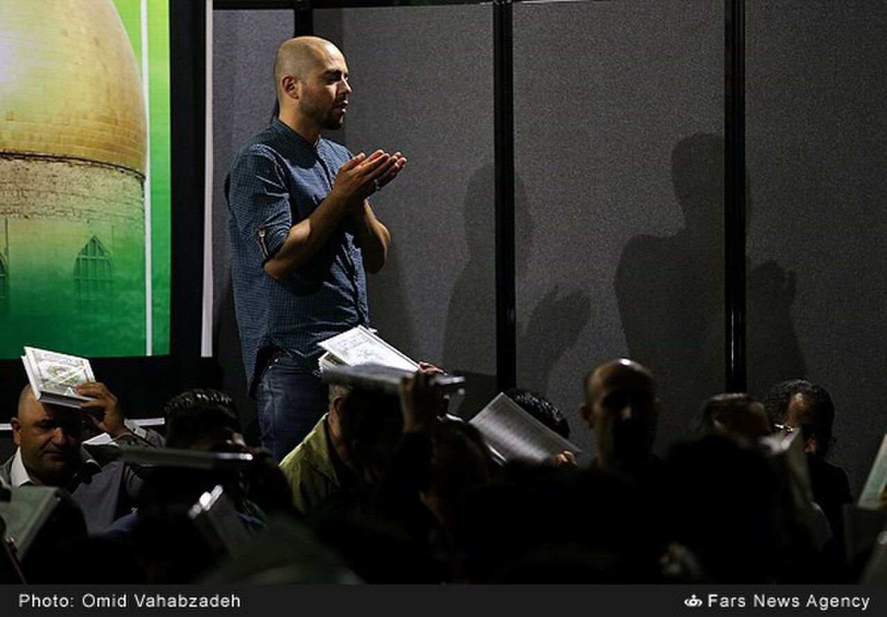

The Judenplatz Holocaust Memorial is a poignant and reflective space dedicated to the memory of Vienna's Jewish community during World War II. Located near the historic Judenplatz, it serves as both a memorial and a reminder of the city's tragic past. Names of Austrian Holocaust victims inscribed on surrounding walls. Stands over medieval synagogue ruins visible underground.
Commemorates the 1421 Vienna Gesera and 20th-century Shoah. Quiet counterpoint to café life on the old Jewish square.
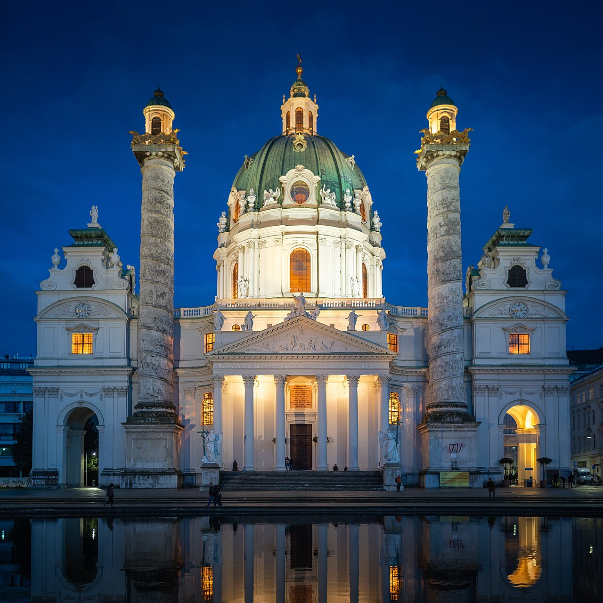
The Karlskirche, a baroque masterpiece, rises majestically on Vienna's Ringstrasse, dominating the skyline with its dome and twin towers. Votive church for plague relief; twin columns echo Trajan's Column. Lift to dome fresco viewing available seasonally.
Commissioned by Charles VI after the 1713 plague vow; completed by son Joseph. Dominant Karlsplatz landmark between Ring and Naschmarkt.

The Kunsthistorisches Museum is one of Vienna's most iconic cultural institutions, showcasing masterpieces from ancient civilizations to the Baroque era. Habsburg painting collections including Bruegel masterworks. Grand staircase and dome interiors match the Naturhistorisches twin.
Opened with the twin museum to display imperial art and Wunderkammer legacies. One of Europe's great old-master museums.
Located on the bustling Graben shopping street, the Maria Theresa Memorial is a tribute to Austria's influential empress and patron of arts. This elegant sculpture captures her regal bearing and dignified presence. Honors Maria Theresa surrounded by advisors and children in relief. Frames the twin museum façades photographically.
Erected long after her reign as Habsburg nostalgia peaked. Central pivot of the Museum Quarter approach from the Ring.
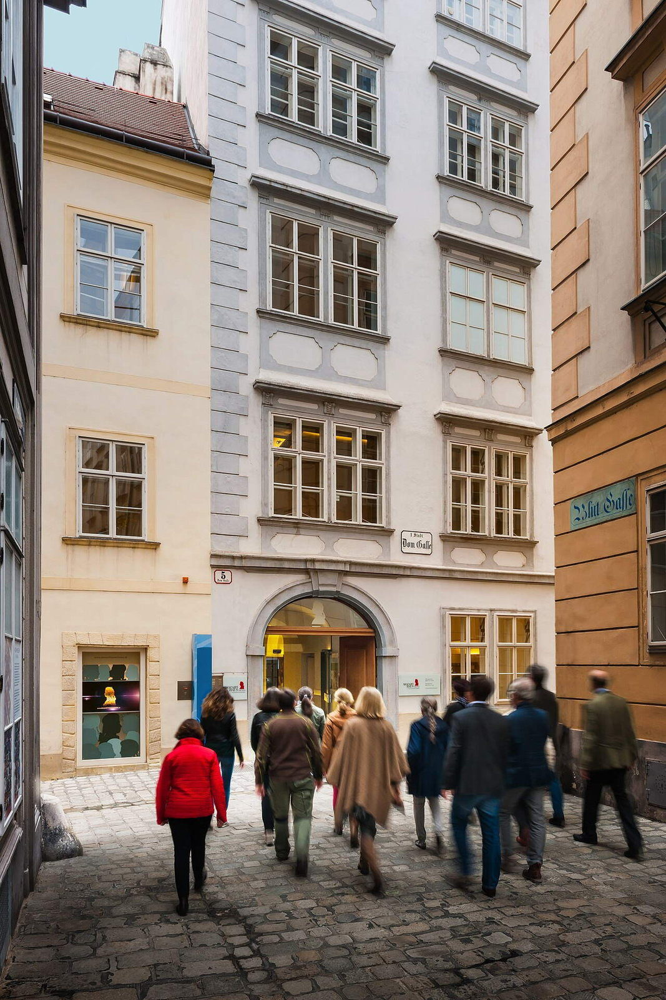
Step into the world of Mozart at Mozarthaus Vienna, a museum dedicated to the life and works of Wolfgang Amadeus Mozart. Located on Mozartstraße, it offers visitors a glimpse into his childhood home and creative environment. Mozart family lived here 1784–1787 composing The Marriage of Figaro period works. Museum recreates period rooms and listening stations.
Only surviving Mozart residence in Vienna open to the public. Compact music-history site steps from Stephansdom.

MuseumsQuartier is Vienna's vibrant cultural hub, nestled amidst the city's historic heart. It was once a military barracks and stable complex, transformed into one of Europe’s most dynamic art districts. Leopold Museum, MUMOK, Tanzquartier, and courtyard lounges. Former imperial court stables repurposed as culture campus.
Major 1990s–2000s conversion project opening baroque walls to contemporary use. Youthful nightlife and museum block west of the Ring.

The Naschmarkt is Vienna's most famous and vibrant market, a bustling hub of local produce, meats, cheeses, and street food. Located in the heart of the city center, it has been a staple of Viennese life since its establishment. Over 100 stalls of produce, spices, and street food. Saturday flea market extends west along the channel.
Grew from 18th-c. milk market into Vienna's largest food bazaar. Everyday shopping and tourist tasting strip near the center.

The Natural History Museum of Vienna is one of the most renowned institutions dedicated to natural sciences and anthropology in Europe. Located on the beautiful campus of the University of Vienna, it showcases a vast collection of fossils, minerals, plants, animals, and cultural artifacts. Mirror twin across Maria-Theresien-Platz to the art history museum. Famous for meteorites, dinosaurs, and the Venus of Willendorf.
Built under Franz Joseph to house imperial natural science collections. Grand interior halls make it a destination beyond specimens.
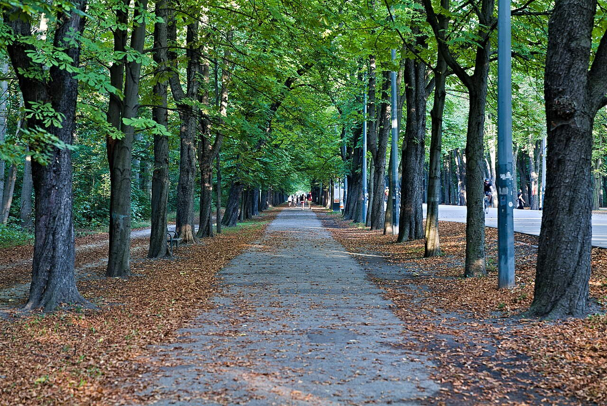
The Prater Hauptallee is Vienna's iconic central avenue within the city's largest park, stretching for over two kilometers through lush greenery and open spaces. It serves as both a leisurely stroll and a bustling pedestrian zone, lined with cafés, shops, and attractions. Former imperial hunting ground opened to public in 1766. Six km straight popular with runners and cyclists.
Hauptallee formalized for court rides; fairgrounds grew at the southern end. Green lung and carnival zone east of the inner city.

Schönbrunn Palace is Vienna's most iconic palace and one of Austria’s greatest historical landmarks. Built as a summer residence for the Habsburg dynasty, it stands majestically on a hill overlooking the city, showcasing Baroque architecture at its finest. 1,441-room summer residence of the Habsburgs; UNESCO site. Gloriette overlooks formal parterres and the city.
Site evolved from hunting lodge to imperial showpiece under Maria Theresa and successors. Vienna's most visited palace complex with zoo and gardens.

Situated on the outskirts of Vienna, Schönbrunn Zoo is one of Europe's oldest zoos and a beloved attraction for locals and visitors alike. Established in 1752 by Empress Maria Theresa as a menagerie for royal animals, it later evolved into a public zoo. World's oldest continuously operating zoo in baroque pavilions. Breeding programs for giant pandas and rare species.
Imperial menagerie opened to the public under Franz Stephan and Maria Theresa. Major family day on the Schönbrunn palace grounds.

The Sigmund Freud Memorial is a contemplative sculpture dedicated to the renowned psychoanalyst and founder of modern psychology. Located on the banks of the River Danube, it was unveiled in 2006 as part of Vienna's celebration of its rich cultural heritage. Freud lived and worked here 1891–1938 before exile. Museum in the building interprets psychoanalysis history.
Site of the famous consulting room, recreated with original furniture in London but memorialized here. Pilgrimage address for intellectual history tourists.

The Spanish Riding School of Vienna is a legendary institution founded in 1573 and formally established in 1736 by Emperor Charles VI. It is renowned for its breathtaking performances showcasing the graceful movements of Lipizzan horses. Classical dressage of Lipizzaner stallions. Morning exercises and gala performances by ticket.
Habsburg court tradition continuing as a living institution. Unique blend of equestrian art and palace architecture.
The Spanish Riding School’s grand façade is a testament to the opulence and tradition of Austria's imperial era. Built in 1787 during the reign of Emperor Joseph II, it showcases Baroque architecture at its finest, with ornate details and symmetrical design elements. Ceremonial entry sequence toward the riding hall. Imperial double eagle motifs on gates.
Part of the Hofburg's late imperial expansion facing the Michaelerplatz. Classic postcard view of court architecture and horses.
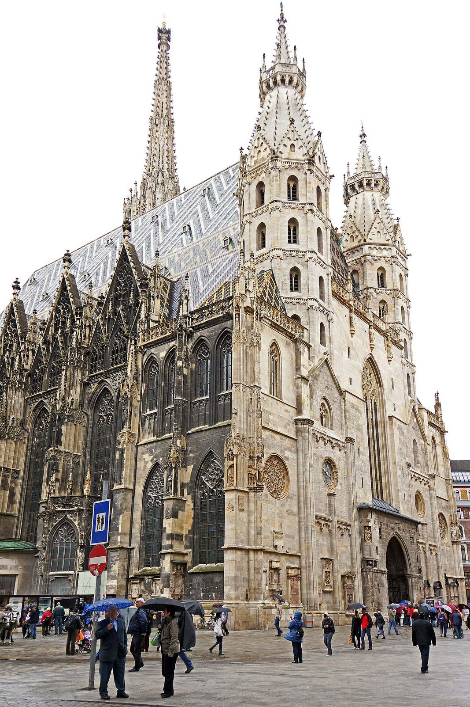
Dominating the skyline of Vienna, St. Stephen’s Cathedral is a majestic Gothic structure that stands as one of Europe’s most iconic cathedrals. South tower “Steffl” dominates the skyline; tiled roof with Habsburg eagle. Burial place of dukes, bishops, and national heroes.
Built on earlier churches; spire and nave completed across late medieval campaigns. Mother church of the Roman Catholic Archdiocese of Vienna.
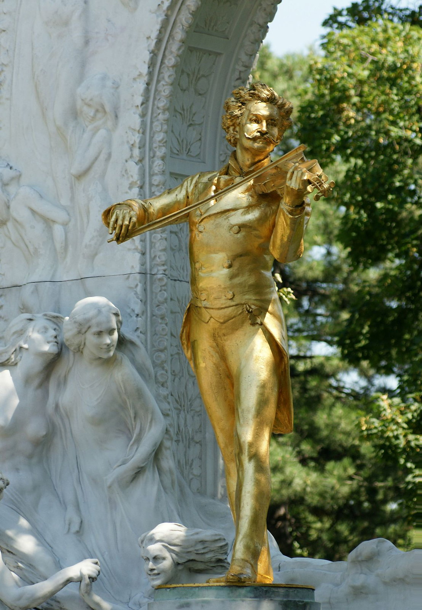
A serene oasis of nature within the bustling heart of Vienna, Stadtpark offers a tranquil retreat for locals and visitors alike. With its manicured lawns, elegant walkways, and picturesque bridges over small streams, it is one of the city's most beloved green spaces. Gilded Johann Strauss monument is a photo staple. Wien River channelled underground through the park.
Ringstraße-era public park replacing fortifications belt. Everyday green space between Karlsplatz and the canal.
At the heart of Vienna lies Stephansplatz, a vibrant hub where tradition meets modern life. Surrounded by historic buildings and bustling cafes, it is one of the city's most iconic squares. U-Bahn interchange under the cathedral's shadow. Pedestrian shopping radiates along Kärntner Straße and Graben.
Market and execution site in the Middle Ages; rebuilt after WWII. Default zero point for visitors orienting in the old town.

Perched high above the city center on Schottenring, Urania Observatory offers a breathtaking view of Vienna's skyline and its famous Hofburg Palace. Built in 1894, it was originally intended as an educational institution to promote astronomy among the general public. Public astronomy programs and riverside café terrace. UNIQA Tower neighbors as a glass high-rise foil.
Founded as adult education observatory in the early 20th century. Canal-side landmark between Schwedenplatz and Julius-Raab-Ufer.
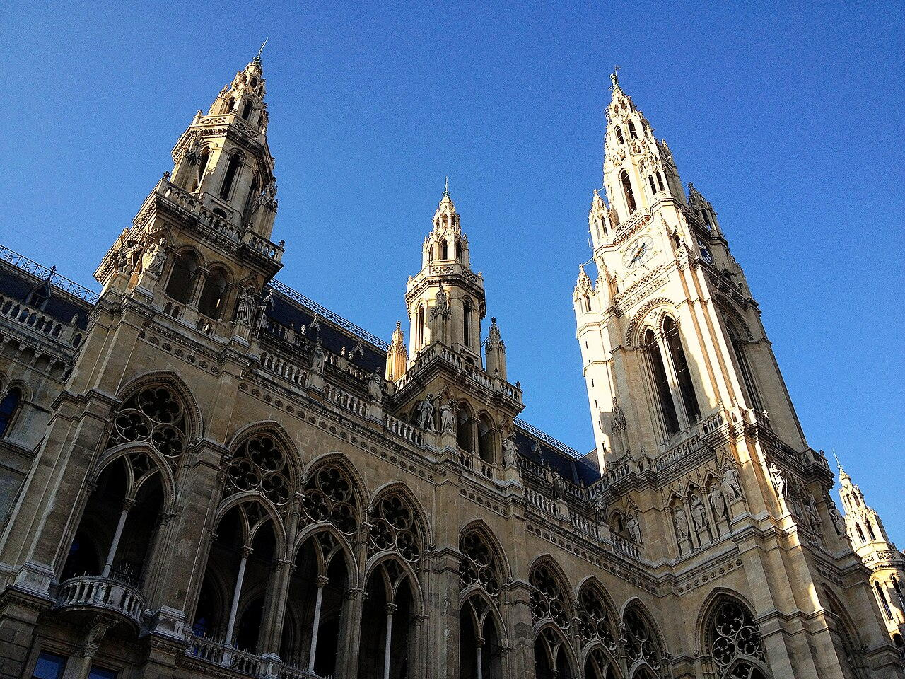
The Vienna City Hall is a majestic landmark standing proudly on Friedrich-Schmidt-Platz, symbolizing the heart of Austrian governance and civic pride. Completed between 1872 and 1883, it showcases a blend of historicist styles, including elements of neo-Renaissance and late Gothic architecture. Tower modeled loosely on Flemish cloth halls. Hosts Christkindlmarkt and summer film festival on the front lawn.
Built as Vienna expanded beyond medieval walls; seat of mayor and council. Anchor of the Ringstraße civic ensemble.

The Vienna Museum of Science and Technology is a vibrant hub showcasing the evolution of technology and engineering through interactive exhibits, hands-on displays, and historical artifacts. Heavy industry, transport, and domestic technology exhibits. Hands-on areas for families.
Founded to celebrate technical progress in the young republic. Complements fine-art narratives with machines and mobility.

The Vienna State Opera is one of Europe's most celebrated opera houses, renowned for its grand architecture and unparalleled performances. Rebuilt after WWII bombing with restored historic façade. World-class repertoire and New Year's broadcast tradition.
Opened as Hofoper; renamed after the fall of the monarchy. One of the great opera addresses of Europe on the Ring.
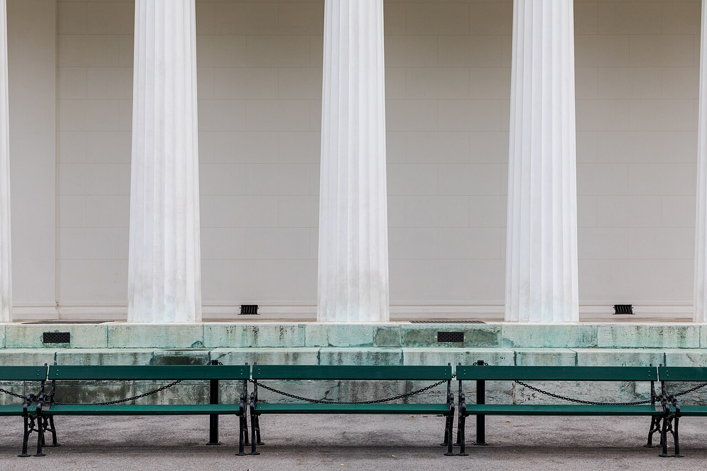
Volksgarten is a picturesque urban park nestled within the heart of Vienna's inner city, offering a tranquil escape amidst bustling streets and historic architecture. Established as part of the Hofburg Palace complex, it was originally created to serve as a royal garden for Emperor Franz I, later evolving into a public space accessible to all citizens. Theseus Temple is a Neoclassical folly by Peter Nobile. Rose beds named for varieties and political figures.
Laid on former bastion ground after Napoleonic demolitions. Peaceful Ring park between Parliament and Hofburg gates.
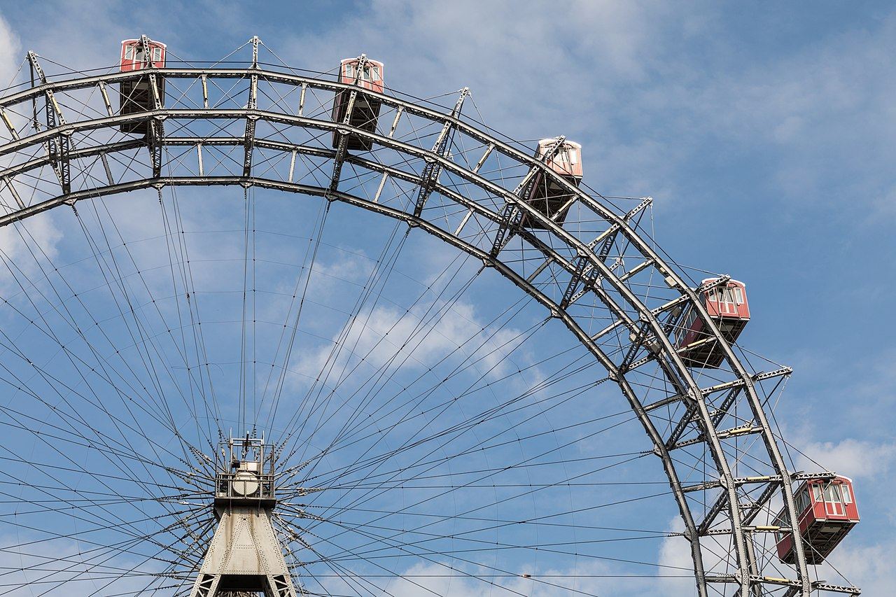
The Wiener Riesenrad, Vienna's iconic Ferris wheel, stands majestically on Praterstern, offering panoramic views of the city. Built in 1897 for the World Exhibition, it has become a symbol of Viennese culture and leisure. Surviving wheel from the 1897 World's Fair; 65 m diameter. Featured in The Third Man and many films.
Engineered by British firm; rebuilt after WWII with original cabins. Icon of the Prater amusement zone and skyline silhouette.